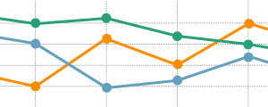

Servicios de desarrollo web, diseño web y consultoría SEO
Nos gusta enfocar los proyectos de forma integral.
Combinamos un diseño inteligente con las últimas tecnologías web, ofreciendo soluciones sólidas, personalizadas y escalables.
Diseño

Muchas veces nuestros proyectos empiezan por aquí. Proyectamos visualmente. Ofrecemos soluciones personales, innovativas, inteligentes y prácticas. Nos encargamos también de que nuestro diseño se traslade adecuadamente en todas las aplicaciones (web o impresas).
Dirección de arte
Dependiendo de las necesidades de cada proyecto, escogemos y dirigimos a fotógrafos, ilustradores, diseñadores y programadores para realizar nuestras ideas de un modo efectivo.
Identidad visual
Desarrollamos logotipos e identidades visuales para todo tipo de clientes. Una vez definida la identidad, la aplicandomos en la papeleria, la página web y en otros elementos, haciendo crecer la identidad de una marca de un modo coherente y planeado.
Diseño web
Diseñamos los wireframes para que nuestros clientes vean y entiendian los proyectos web antes de que estén online. Después gracias a nuestros servicios en ingeniería web se desarrollaran adecuadamente.
Diseño impreso
Nuestro background es también en diseño gráfico impreso. Diseñamos revistas, libros, calendarios, packs y cualquier material colateral impreso, ademas de encargarnos de la gestiones de impresión.
Diseño de interficies
Diseñamos interficies para webs y aplicaciones web, equilibrando la funcionalidad técnica con los elementos visuales y centrándonos siempre en el usuario. Nuestro objetivo es hacer la interación simple, efectiva y atractiva.
Ingeniería web

Internet se ha convertido en la plataforma de comunicación y aplicaciones por excelencia. Desarrollamos tu idea, haciendo que sea sólida, mantenible y escalable basándonos en los estándares y usando las últimas tecnologías web.
Desarrollo web
Usando los estándares web y guiados por la metodología ágil de desarrollo convertimos en realidad el diseño web previamente definido. Construimos soluciones escogiendo el lenguaje de programación / framework que mejor se adapte a tu proyecto, siempre con la escalabilidad y el óptimo rendimiento en mente.
Sistemas gestores de contenidos
Construimos soluciones para que el cliente pueda añadir y actualizar los contenidos de su website o aplicación sin necesidad de conocimientos técnicos.
E-commerce
Comprar online es una práctica habitual entre los internautas. Gracias a una tienda online se consigue un canal de venta y comunicación directo entre la marca y el consumidor. Nos encargamos de construir una solución en la que el cliente pueda añadir nuevos productos gestionando la venta, pago y envío de los mismos.
Integración social media
Twitter? Facebook? Myspace? Integramos estos servicios en tu existente blog o website. Te ayudamos a comprender y a usar las nuevas social media en el caso de que las necesites. Ayudamos a potenciar tu marca o empresa con estos nuevos medios de comunicación.
Desarrollo de aplicaciones web
Podemos construir websites para optimizar flujos de trabajo, para automatizar procesos repetitivos, para llevar a cabo la idea de negocio de un cliente, websites que pasan a ser software online.
CONSULTORÍA SEO
Te encuentran en google tus clientes o consumidores potenciales? Te ayudamos a posicionarte en los motores de búsqueda de una manera inteligente, pensando en tu target y ofreciendo soluciones realistas.
Análisis de palabras clave
La clave de llevar a cabo una campaña SEO con éxito depende totalmente de la estrategia en la elección de las palabras clave. Analizamos que palabras son las que usa la gente para buscar en tu nicho o industria y alineamos con tu negocio todas aquellas que creamos más adecuadas.
Optimización de código
Tienes ya una página web en funcionamiento pero los motores de búsqueda no la listan en sus resultados ? Nosotros nos encargamos de hacer un análisis de On-Page SEO, detectando así los puntos débiles en el código de tu site.
Envío manual a motores de búsqueda
Nos encargamos de que los motores de búsqueda por excelencia ( Google, Yahoo, etc...) conozcan la existencia de tu web, gracias a métodos de envío manual avisaremos a los buscadores de tu presencia en la web.
Análisis de la competencia
Realizamos estudios de benchmarking sobre como la competencia está llevando a cabo su estrategia SEO.Te orientamos para que no comentas sus errores y para que aproveches sus debilidades.